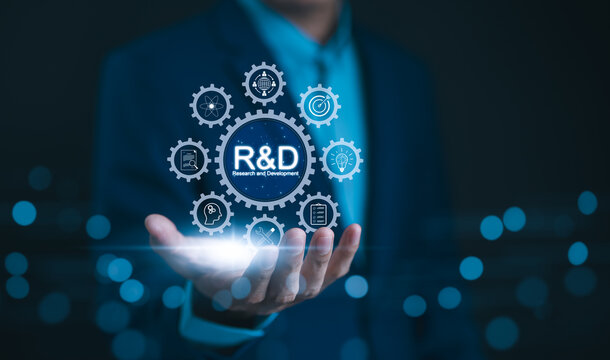

product/Services
From concept to deployable sensing stack.
State of Art Research
Advanced research support for radar, sensing systems, embedded intelligence, and applied technology development.
We support early-stage investigation, feasibility studies, algorithm exploration, and prototype validation for radar and sensing-led products.
Work can include literature study, signal-processing experiments, simulation planning, test-case design, and technical documentation.

Consultancy Service
Technical consulting for product planning, system design, implementation strategy, and engineering decisions.
We help teams clarify technical direction, choose suitable architectures, review implementation plans, and reduce uncertainty before development begins.
Consulting can cover radar systems, embedded software, data processing workflows, testing strategy, and product-readiness planning.
Academic Product
Academic tools, prototypes, and learning-focused products for institutions, researchers, and student teams.
We develop practical academic products that help learners and researchers work with real sensing concepts, embedded systems, and software workflows.
These products can be tailored for labs, workshops, research demonstrations, and project-based learning environments.
Special R&D
Focused research and development projects for unique technical requirements and experimental systems.
We take on focused R&D assignments where the requirement is exploratory, specialized, or outside a standard product workflow.
This includes proof-of-concept systems, custom sensing experiments, technical demonstrations, and engineering validation tasks.

Skill Development
Training programs and practical learning modules for radar, embedded systems, and technology development skills.
We design training programs that combine technical foundations with hands-on practice for students, engineers, and institutional teams.
Modules can include radar fundamentals, sensor data processing, embedded development, software prototyping, and applied project guidance.